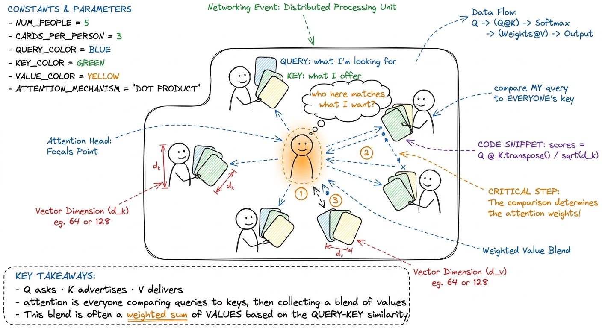
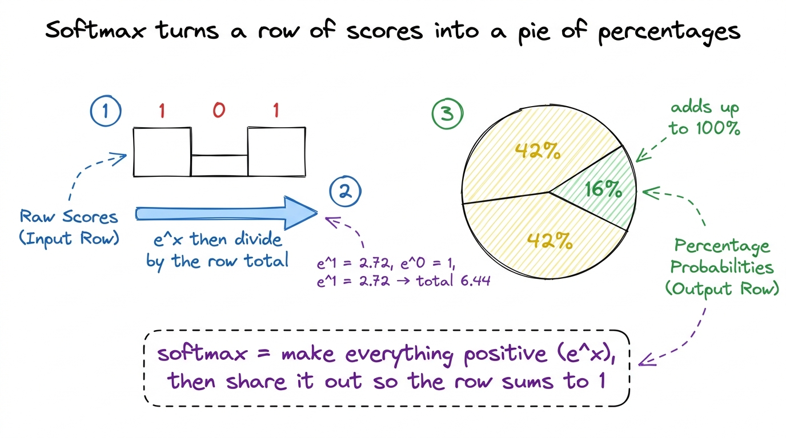
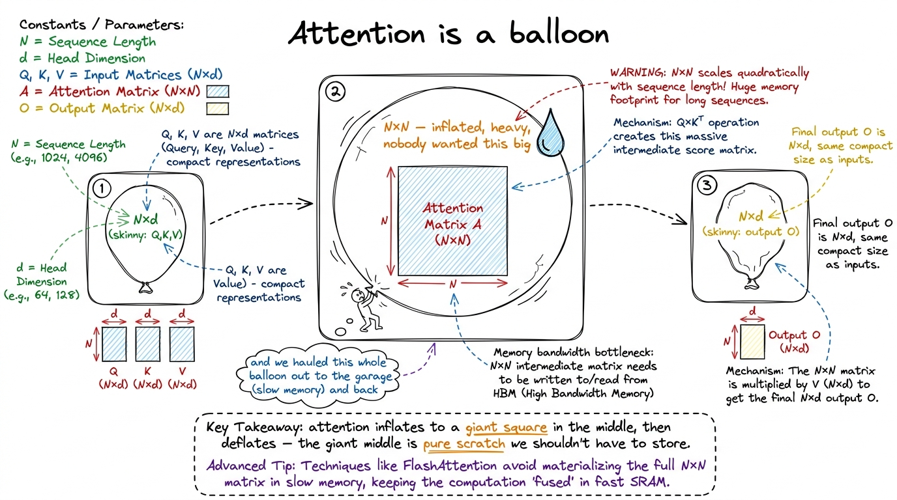
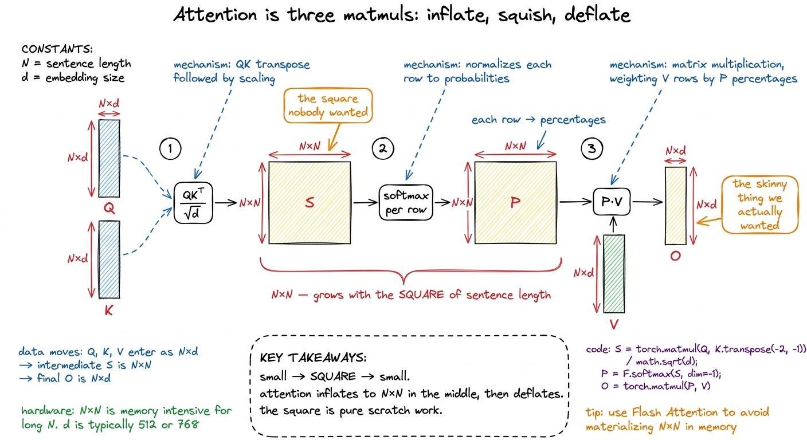
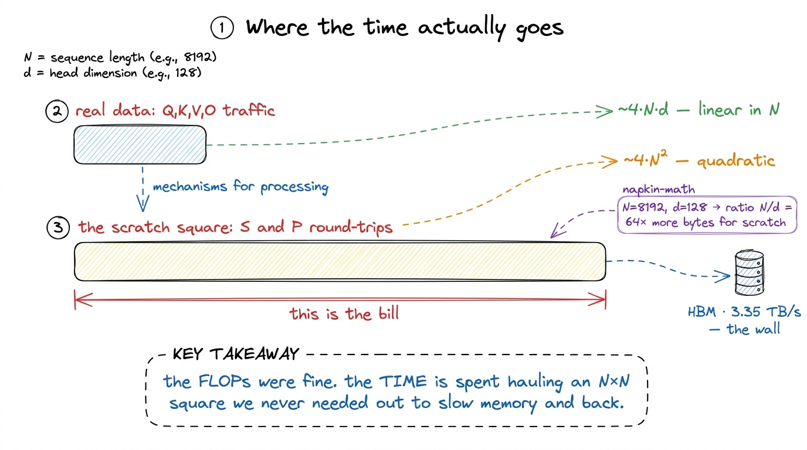

Teaching attention as three matmuls
By the end of this chapter you can stand at a whiteboard and teach attention as three matrix multiplies — QKᵀ, then softmax, then ×V — and, more importantly, teach why the giant N×N scores in the middle are a disaster, so that when you unveil FlashAttention next it lands like a magic trick with the misdirection already explained.
You do not need to know how attention was invented, or what queries and keys "mean" philosophically. For this chapter, attention is a machine that takes three tables of numbers and produces one table of numbers. We treat it that mechanically, because the mechanical view is the one that reveals the performance problem. Let's build it up the way you'll build it for students.
The one-sentence version
You already taught matrix multiply. Attention is just three matmuls in a row, with one small squishing step wedged in the middle. That's the whole thing. If a student can multiply matrices — and after the matmul chapter, they can — they can already do attention. You are not teaching a new hard idea. You are teaching a recipe made of ingredients they already own.
Meet the three tables: Q, K, V
Every word in your sentence gets turned into three little rows of numbers. Call them the word's query, its key, and its value. Stack all the queries into one table Q, all the keys into K, all the values into V. Each table has one row per word and d numbers across (d is the "head dimension" — think 64 or 128). So each is shaped N × d, where N is how many words are in the sentence.

figure rendering · The attention metaphor: a room of people comparing their query card toDon't explain where Q, K, V come from — that's a distraction here. Just hand students the three tables as given, and say: our job is to combine them into one output table O, also shaped N × d. Same shape in, same shape out. The magic is what happens in between.
Step 1 — QKᵀ: everybody compares with everybody
The first step asks, for every word: how much should I pay attention to every other word? To measure "how much word i cares about word j," we take word i's query row and word j's key row and — you guessed it — do a dot product. Big dot product means "these two match, pay attention." Small or negative means "ignore."
Do that for every pair of words and you get a grid of scores. Row i, column j is "how much word i cares about word j." That grid is exactly Q times K-transposed, written QKᵀ. Its shape is N × N — one score for every pair of words.
[1, 0] and K's three rows are [1, 0], [0, 1], [1, 1]. Word 1's scores are the dot products: [1,0]·[1,0]=1, [1,0]·[0,1]=0, [1,0]·[1,1]=1. So row 1 of the score grid is [1, 0, 1] — word 1 strongly cares about words 1 and 3, and ignores word 2. Do one row live; the grid fills in the same way row by row.Notice the shape: three words in, but a 3×3 grid of scores comes out. Nine numbers from three words. Ten words would give a hundred scores. A thousand words would give a million. This is the seed of the whole problem, and you should plant it right now, quietly: the score grid grows with the square of the sentence length.
There's a tiny footnote step: we divide every score by √d. Don't make a fuss about it. It just keeps the numbers from getting huge when d is big, so the next step behaves. Mention it, write /√d, move on.
Step 2 — softmax: turn scores into percentages
A row of raw scores like [1, 0, 1] isn't a set of weights yet — the numbers don't add up to anything meaningful. Softmax fixes that. It takes a row of numbers and turns it into percentages that add up to 100%, where bigger inputs get bigger shares. It's the "turn scores into a pie chart" step.
The recipe, per row: raise e to the power of each number (this makes everything positive and stretches the big ones ahead), then divide each result by the total of the row. Now every number is between 0 and 1, and the row sums to 1. Those are your attention weights.
[1, 0, 1]. Exponentiate: e^1 ≈ 2.72, e^0 = 1, e^1 ≈ 2.72. Total = 6.44. Divide each: 2.72/6.44 ≈ 0.42, 1/6.44 ≈ 0.16, 2.72/6.44 ≈ 0.42. So word 1 puts 42% of its attention on word 1, 16% on word 2, 42% on word 3. They sum to 1.00. That's a softmax by hand, on real numbers, in thirty seconds.
figure rendering · Softmax, drawn as turning a row of raw scores into a pie chart of atteDo this to every row of the N×N score grid and you get another N×N grid — call it P, for probabilities. Same size as the scores. Same square that grows with the sentence.
Step 3 — ×V: collect the blended handout
Now every word has a row of percentages saying how much to weigh each other word. The final step: use those percentages to blend the value rows. Word 1's output is 42% of value-row-1, plus 16% of value-row-2, plus 42% of value-row-3 — a weighted average of the value rows, using this word's attention percentages as the weights.
And a weighted-average-of-rows is exactly what a matrix multiply does. So step 3 is just P times V, giving the output O, shaped N × d. Same shape we started with. The sentence went in as three tables and came out as one, having let every word gather a custom blend of information from every other word.

figure rendering · The balloon metaphor: attention inflates to a giant N×N square in the
figure rendering · The technical translation: attention inflates from N×d to a square N×NWhere the giant square goes wrong
Here is the pivot of the chapter, and where you set the hook for FlashAttention. Everything above is correct. Written in three lines of PyTorch, it runs and gives the right answer:
S = (Q @ K.transpose(-2, -1)) / math.sqrt(d) # (N, N) scores
P = softmax(S, dim=-1) # (N, N) probabilities
O = P @ V # (N, d) outputIt is also, for any real sentence, shockingly slow — for a reason that has nothing to do with how much math it does. The math is fine. The problem is that square.
Recall the catch from the CPU-vs-GPU chapter: the cooks are faster than the hallway that feeds them. A GPU is limited by how fast it can be fed data, not how fast it computes. Now look at what these three lines do to memory. The score square S is N × N. For a sequence of N = 8192 words in FP16, that's 8192 × 8192 × 2 bytes = 128 MiB — and that's per attention head, per layer. It is far too big to sit in the GPU's fast on-chip memory. So it gets written all the way out to slow, far-away main memory (HBM), then read all the way back for the next step.
Count the round-trips for that square and it's damning. QKᵀ writes the N×N scores out to HBM. Softmax reads them back, then writes the N×N probabilities out again. Then ×V reads them back once more. That's at least four full N×N trips across the slow memory boundary — for a quantity the algorithm never actually wanted to keep. The three tables we started with (Q, K, V) and the output O are all "skinny": their size grows linearly with N. It's only that fat middle square that grows with N². And the square is exactly what we're shoveling back and forth.
Q, K, V, O together are about 4·N·d numbers. The score-square traffic is about 4·N² numbers. The ratio is N/d. At N=8192 and d=128, that's 64× more bytes moved for the scratch work than for all the real data combined. Write "64×" on the board and circle it. The kernel spends most of its wall-clock time not computing — just hauling a temporary square out to memory and back.
figure rendering · The bytes, not the FLOPs, set the clock: the quadratic scratch square1 The two matmuls (QKᵀ and PV) are genuinely efficient — real GEMMs that keep the tensor cores busy. It's the softmax between them, plus the mandatory write-then-read of the square, that stalls. Softmax reads N² numbers, does a pinch of arithmetic each, and writes N² back — the definition of memory-bound.
The fix, foreshadowed
So end the chapter by naming the villain and pointing at the hero. The villain is not the math — the math is exactly what attention requires and the GPU eats it happily. The villain is the decision to write the N×N square down in slow memory at all. We inflated to a square, saved it to HBM, read it back, and deflated — when we only ever wanted the skinny output.
S.numel() * 2 / 1e6 MiB for a big N so the room gasps at the megabytes.You can now teach
- Attention as three matmuls —
QKᵀ, softmax,×V— built entirely from the dot product and matmul students already know. - Q, K, V as three cards at a networking event: query asks, key advertises, value delivers; output is a blended handout.
- Softmax as "turn a row of scores into a pie chart of percentages," done by hand on real numbers.
- The balloon shape story: attention inflates from N×d to an N×N square and deflates back — and the square is scratch nobody wanted.
- Why the N×N square is the problem: it's too big for on-chip memory, so it round-trips through slow HBM four times, moving ~64× more bytes than all the real data — the FLOPs were never the issue.
- The setup for FlashAttention: "what if we never write the square down?" — the exact question the next chapter answers.